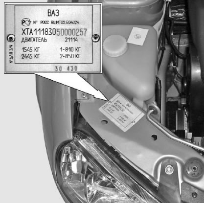
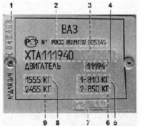
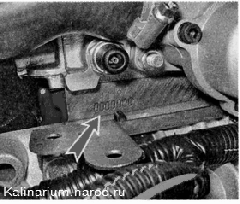

Модель, идентификационный номер автомобиля, модель
двигателя, номер для запасных
частей указаны на табличке,
закрепленной на верхней поперечине рамки радиатора под капотом в моторном отсеке.

|  |
Сводная табличка: 1 - номер для запасных частей (соответствует порядковому номеру автомобиля, сошедшего с конвейера); 2 — номер одобрения типа транспортного средства; 3 — идентификационный номер (ХТА — код завода-изготовителя; 111940 — модель автомобиля; 7 — год выпуска; последние семь цифр — номер кузова); 4 — модель двигателя; 5 — нагрузка на переднюю ось; 6 — нагрузка на заднюю ось; 7 — коды варианта исполнения и комплектации автомобиля; 8 — максимальная разрешенная масса автомобиля; 9 — максимальная разрешенная масса автомобиля с прицепом
�� |
Номер двигателя выбит на торце блока цилиндров над картером сцепления.
 |